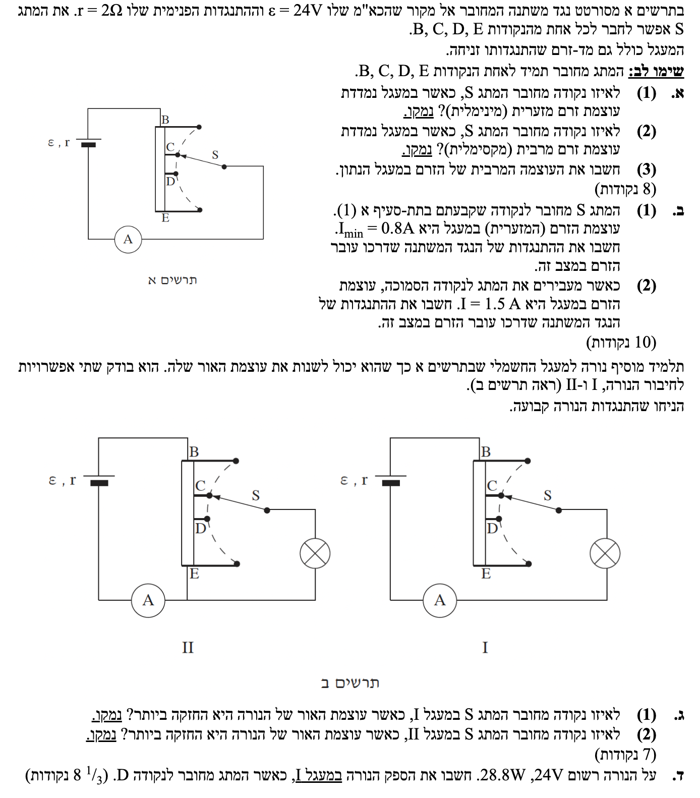
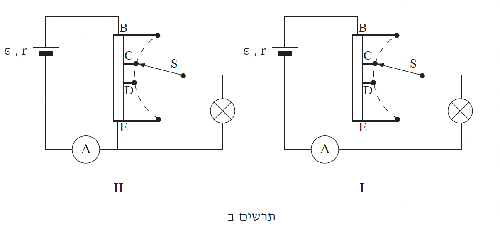

פתרון מודרך בפיזיקה
בגרות חשמל 2011, שאלה 2
פתרון מלא, מודרך וצעד-אחר-צעד המשלב הבנה קונספטואלית ופיתוחים מתמטיים.
עודכן:
--- --:--:--
מבט כללי על השאלה
ברוכים הבאים לפתרון המלא! נעבור צעד-אחר-צעד, נסביר כל נוסחה ונבין את העקרונות הפיזיקליים שמאחורי המעגל החשמלי הנתון.
חשוב לעקוב אחר ההסברים ולא רק אחר המספרים, תוך היצמדות לעקרונות של חוק קירכהוף וחוק אוהם למעגל שלם.

[תמונת השאלה המקורית]
לא נמצאה תמונה בשם question-image.png באותה תיקייה.
מה נתון:
מעגל חשמלי (תרשים א') הכולל מקור מתח עם כוח אלקטרו-מניע (כא"מ) של \( \varepsilon = 24\text{V} \), והתנגדות פנימית \( r = 2\Omega \). במעגל מחובר נגד משתנה (ראוסטט), בו הזרם נכנס מהנקודה העליונה B ויוצא מהמגע הנייד (זחלן) S. מד הזרם (אמפרמטר) נחשב אידאלי (התנגדות אפס).
מה מחפשים:
לאיזו מהנקודות (B, C, D, E) צריך לחבר את המתג S כדי שמד הזרם יראה את עוצמת הזרם המזערית (מינימלית) ביותר? יש לנמק.
נוסחאות ועקרונות בשימוש:
\( \Sigma\varepsilon = \Sigma IR \) (חוק קירכהוף)
פתרון צעד-אחר-צעד:
נפתח את חוק קירכהוף עבור המעגל שלנו כדי למצוא את הקשר בין הזרם להתנגדות הכוללת במעגל הפשוט:
\[ \varepsilon = I(R + r) \implies I = \frac{\varepsilon}{R + r} \]
מהפיתוח רואים כי הזרם \( I \) נמצא ביחס הפוך להתנגדות הכוללת במעגל. מכיוון שהכא"מ וההתנגדות הפנימית קבועים, נגדיל את ההתנגדות של הנגד המשתנה למקסימום כדי להקטין את הזרם למינימום.
הזרם נכנס לנקודה B, ויוצא דרך S. כדי שאורך קטע ההתנגדות יהיה מקסימלי, עלינו לחבר את S לנקודה הרחוקה ביותר.
\[ R_{max} \implies L_{max} \implies \text{Point E} \]
מסקנה: יש לחבר את המתג S לנקודה E. במצב זה הזרם עובר דרך כל הנגד המשתנה (התנגדות מקסימלית) ולכן הזרם מינימלי.
טיפ מורה: זכרו את עקרון הפעולה של ראוסטט: ההתנגדות פרופורציונלית לאורך התיל. ככל שהזרם עובר מסלול ארוך יותר בחומר ההתנגדות, ההתנגדות גדלה והזרם הכולל יורד.
מה נתון: אותו מעגל חשמלי ונתונים מסעיף קודם.
מה מחפשים: לאיזו נקודה יש לחבר את המתג S כדי שעוצמת הזרם תהיה מרבית (מקסימלית)?
נוסחאות בשימוש:
\( \Sigma\varepsilon = \Sigma IR \)
פתרון צעד-אחר-צעד:
כפי שראינו בפיתוח הקודם (\( I = \frac{\varepsilon}{R + r} \)), כדי לקבל את הזרם המקסימלי האפשרי, עלינו לדאוג שמכנה השבר יהיה הקטן ביותר שניתן. נשאף להקטין את ההתנגדות של הנגד המשתנה למינימום (\( R = 0\Omega \)).
זה קורה כאשר הזרם נכנס לנקודה B ומיד יוצא דרך S, מבלי לעבור בתוך סליל ההתנגדות.
\[ R_{min} = 0 \implies L_{min} = 0 \implies \text{Point B} \]
מסקנה: יש לחבר את המתג S לנקודה B. במצב זה הזרם עוקף את חומר ההתנגדות וההתנגדות החיצונית היא אפס.
טיפ מורה: כלל אצבע חשוב במעגלים: במעגל פשוט עם מקור מתח יחיד, לקבלת זרם מקסימלי נקטין את ההתנגדות החיצונית למינימום.
מה נתון: מהסעיף הקודם \( R = 0\Omega \). בנוסף: \( \varepsilon = 24\text{V} \), \( r = 2\Omega \).
מה מחפשים: לחשב מספרית את העוצמה המרבית של הזרם \( I_{max} \).
נוסחאות בשימוש:
\( \Sigma\varepsilon = \Sigma IR \)
חישוב:
מתוך חוק קירכהוף (\( \varepsilon = I_{max}(0 + r) \)) נבודד את הזרם המקסימלי ונציב את הנתונים:
\[ I_{max} = \frac{\varepsilon}{r} = \frac{24}{2} = 12\text{A} \]
מסקנה: עוצמת הזרם המרבית במעגל הנתון היא \( I_{max} = 12.0\text{A} \).
טיפ מורה: שימו לב! זרם זה קרוי "זרם הקצר" של מקור המתח. זהו הזרם המקסימלי שהסוללה מספקת כאשר ההתנגדות החיצונית אפסית.
מה נתון: מתג S מחובר לנקודה E. עוצמת הזרם מינימלית: \( I_{min} = 0.8\text{A} \). הנתונים הנוספים: \( \varepsilon = 24\text{V} \), \( r = 2\Omega \).
מה מחפשים: לחשב את התנגדות הנגד המשתנה במצב זה (ההתנגדות הכוללת \( R_{max} \)).
נוסחאות בשימוש:
\( \Sigma\varepsilon = \Sigma IR \)
חישוב:
נשתמש בחוק קירכהוף ונבודד אלגברית את התנגדות הראוסטט \( R_{max} \) לפני ההצבה:
\[ \varepsilon = I_{min}(R_{max} + r) \]
\[ R_{max} + r = \frac{\varepsilon}{I_{min}} \implies R_{max} = \frac{\varepsilon}{I_{min}} - r \]
כעת נציב את הערכים המספריים:
\[ R_{max} = \frac{24}{0.8} - 2 = 30 - 2 = 28\Omega \]
מסקנה: התנגדות הנגד המשתנה (כאשר מחובר במלואו) היא \( R = 28.0\Omega \).
טיפ מורה: תמיד מומלץ לבודד את הנעלם באופן אלגברי לפני הצבת המספרים כפי שעשינו כאן. זה מסודר יותר ומקטין טעויות חישוב.
מה נתון: המתג מועבר לנקודה D. עוצמת הזרם החדשה שנמדדה היא \( I = 1.5\text{A} \).
מה מחפשים: לחשב את התנגדות קטע הנגד המשתנה שדרכו עובר הזרם כעת (מנקודה B ל-D). נסמן: \( R_{BD} \).
נוסחאות בשימוש:
\( \Sigma\varepsilon = \Sigma IR \)
חישוב:
כפי שפיתחנו בסעיף הקודם (\( R = \frac{\varepsilon}{I} - r \)), נציב את הזרם החדש:
\[ R_{BD} = \frac{24}{1.5} - 2 \]
\[ R_{BD} = 16 - 2 = 14\Omega \]
מסקנה: התנגדות הנגד המשתנה דרכו עובר הזרם היא \( R_{BD} = 14.0\Omega \).
טיפ מורה: הבחנה יפה: בסעיף הקודם מצאנו שכל ההתנגדות היא 28 אוהם. כעת גילינו שעד נקודה D ההתנגדות היא בדיוק חצי (14 אוהם). המשמעות היא שנקודה D ממוקמת בדיוק במרכזו החשמלי של הנגד המשתנה!
כעת, התלמיד מוסיף נורה למעגל לשליטה בעוצמת ההארה. הוא בוחן שתי תצורות:
• מעגל I: תצורת "ראוסטט" (בטור). הנורה מחוברת בטור לחלק הפעיל של הנגד המשתנה.
• מעגל II: תצורת "פוטנציומטר" (מחלק מתח). הנורה מחוברת במקביל לחלק התחתון של הנגד המשתנה.

[תרשים ההקדמה לסעיף ג']
לא נמצאה תמונה בשם image-3.png באותה תיקייה.
מה נתון: מעגל מסוג I (ראה תרשים שמאלי). הנורה מחוברת בטור לחלק הפעיל של הנגד המשתנה (B ל-S). התנגדות הנורה קבועה.
מה מחפשים: לאיזו נקודה יש לחבר את המתג S כדי שעוצמת האור של הנורה תהיה מקסימלית? ונמק.
נוסחאות ועקרונות בשימוש:
\( P = V_{AB}I \) (הספק)
\( V = RI \) (חוק אוהם)
\( \Sigma\varepsilon = \Sigma IR \) (חוק קירכהוף)
פתרון צעד-אחר-צעד:
נשלב את נוסחת ההספק וחוק אוהם כדי למצוא ביטוי להספק הנורה כתלות בזרם ובהתנגדותה (שהיא קבועה):
\[ P = V \cdot I = (I \cdot R_{bulb}) \cdot I = I^2 \cdot R_{bulb} \]
כדי למקסם את ההספק \(P\) (עוצמת הארה), עלינו למקסם את הזרם במעגל הטורי.
מתוך פיתוח חוק קירכהוף לזרם (\( I = \frac{\varepsilon}{\Sigma R} \)), סך ההתנגדות צריכה להיות מינימלית. הדרך היחידה להקטין התנגדות כוללת היא להקטין את ההתנגדות של הנגד המשתנה (\(R_{BS}\)) למינימום (שווה לאפס).
מסקנה: יש לחבר את המתג S לנקודה B. במצב זה התנגדות הראוסטט היא 0, והזרם (ועמו הספק הנורה) יהיה מקסימלי.
טיפ מורה: מעגל I משתמש בנגד המשתנה כראוסטט (לוויסות זרם בטור). הנגד "גונב" מתח וזרם מהנורה. סילוקו (ע"י חיבור ל-B) יעניק לנורה את התנאים המיטביים להארה.
מה נתון: מעגל מסוג II (תרשים ימני). הנורה מחוברת במקביל לחלק התחתון של הנגד המשתנה. החלק העליון (B עד S) נמצא בטור למקור ולמערכת.
מה מחפשים: לאיזו נקודה יש לחבר את S במעגל זה כדי שעוצמת האור תהיה מקסימלית? ונמק.
נוסחאות ועקרונות בשימוש:
\( P = V_{AB}I \)
\( V = RI \)
פתרון צעד-אחר-צעד:
בחיבור מקבילי, נוח לבטא את ההספק דרך המתח. נשלב את חוק אוהם לנוסחת ההספק:
\[ P = V_{bulb} \cdot I = V_{bulb} \cdot \left(\frac{V_{bulb}}{R_{bulb}}\right) = \frac{V_{bulb}^2}{R_{bulb}} \]
כדי שההספק יהיה מקסימלי, המתח על הנורה \( V_{bulb} \) צריך להיות מקסימלי.
מתח המקור מתחלק בין הנגד הטורי \( R_{BS} \) לקבוצה המקבילית (הנורה).
כדי שכל המתח יפול על הנורה, עלינו לבטל את מפל המתח על החלק הטורי ולשאוף לכך ש- \( R_{BS} = 0 \).
זה קורה כשמחברים את S לנקודה B. במצב זה הנורה מחוברת ישירות להדקי המקור.
מסקנה: יש לחבר את המתג S לנקודה B. במצב זה אין התנגדות טורית שיוצרת מפל מתח, והנורה מקבלת את מלוא המתח מהמקור.
טיפ מורה: בשתי התצורות התשובה זהה, אבל הסיבה שונה! במעגל I עבדנו עם זרם טורי שרצינו למקסם. במעגל II רצינו שהנורה תקבל "נתח" מקסימלי ממתח הסוללה. מה היה קורה לו חיברנו את S לנקודה E במעגל II? הנורה הייתה מתקצרת ולא מאירה כלל!
מה נתון: מעגל I (הטורי). מתג מחובר לנקודה D, לכן \( R_{BD} = 14\Omega \). נתוני מקור: \( \varepsilon = 24\text{V} \), \( r = 2\Omega \). על הנורה נתוני יצרן נומינליים: \( V_{nom} = 24\text{V} \), \( P_{nom} = 28.8\text{W} \).
מה מחפשים: לחשב את ההספק המעשי (\( P_{real} \)) המתפתח על הנורה כעת.
נוסחאות בשימוש:
\( P = V_{AB}I \)
\( V = RI \)
\( R_T = \Sigma R_i \)
\( \Sigma\varepsilon = \Sigma IR \)
פתרון צעד-אחר-צעד:
שלב 1: חישוב התנגדות הנורה
נמצא את התנגדות הנורה הקבועה מתוך נתוני היצרן, באמצעות הביטוי שפיתחנו קודם (\( P = V^2 / R \)):
\[ R_{bulb} = \frac{V_{nom}^2}{P_{nom}} = \frac{24^2}{28.8} = \frac{576}{28.8} = 20\Omega \]
שלב 2: התנגדות שקולה במעגל הטורי
נחבר את כל ההתנגדויות המחוברות בטור במעגל I:
\[ R_{eq} = R_{BD} + R_{bulb} + r = 14 + 20 + 2 = 36\Omega \]
שלב 3: מציאת הזרם במעגל
נשתמש בחוק קירכהוף לחילוץ הזרם החדש במעגל:
\[ I = \frac{\varepsilon}{R_{eq}} = \frac{24}{36} = \frac{2}{3}\text{A} \]
שלב 4: חישוב הספק מעשי
כעת נחשב את ההספק על הנורה בעזרת הביטוי שפיתחנו (\( P = I^2 R \)):
\[ P_{real} = \left(\frac{2}{3}\right)^2 \cdot 20 = \frac{4}{9} \cdot 20 = \frac{80}{9} \approx 8.888...\text{W} \]
מסקנה: הספק הנורה במעגל I, כאשר המתג בנקודה D, הוא \( P \approx 8.89\text{W} \).
טיפ מורה: מלכודת נפוצה: תלמידים נוטים בטעות להשתמש בהספק הנומינלי (28.8W) כאילו הוא מתקיים תמיד. הנתונים הרשומים מתקיימים רק כשמספקים את המתח הרשום. במעגל שלנו, הראוסטט "גנב" מתח ולכן הנורה תאיר בעוצמה חלשה יותר (כ-9 וואט בלבד).